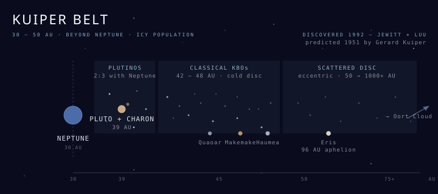

The Kuiper Belt
A disc of icy bodies beyond Neptune — predicted in 1951, confirmed in 1992, and the source of every short-period comet that flies past Earth.

101 · zoom in
Gerard Kuiper proposed it in a 1951 paper: if the early solar system's planet-forming disc extended past Neptune, then somewhere out there a population of icy leftovers should still be orbiting the Sun. They wouldn't have made it into planets because nothing accreted at those distances, but the disc should still be there, dynamically intact. For four decades the prediction sat unconfirmed because the objects are small, cold, and tens of AU away — almost impossible to detect with mid-20th-century telescopes.
In 1992 David Jewitt and Jane Luu, observing from Mauna Kea with a then-novel CCD detector, found 1992 QB1 (later named Albion). A ~160 km icy body in a stable circular orbit at 44 AU. Within a year they had a second. Within five years there were dozens. Today catalogues hold more than 3,000 confirmed Kuiper-Belt objects and dynamical models predict over 100,000 bodies larger than 100 km — and on the order of a billion comet-sized objects. The total mass is small (4–10% of Earth) but that's still about 200× the asteroid belt.
Pluto, demoted in 2006, turned out to be the largest known member of the belt rather than the runt of the planets. Eris, discovered in 2005 and slightly more massive than Pluto, is what triggered the IAU's reclassification: if Eris is a planet, then so are Haumea, Makemake, Quaoar, Sedna, and dozens of likely candidates further out. The IAU drew the line at 'dwarf planet' instead, and the Kuiper Belt is the dwarf-planet reservoir.
Structurally the belt has three populations. The classical Kuiper Belt at 42–48 AU holds bodies on nearly circular, low-inclination orbits — the dynamically unperturbed remnant of the original disc, Albion and Quaoar live here. The resonant population is held in 2:3 mean-motion resonance with Neptune (Pluto is the archetype — for every two Pluto orbits, Neptune does three); these are called Plutinos. Then the scattered disc is the eccentric, high-inclination outer extension where Eris and Sedna roam, with perihelia near Neptune and aphelia hundreds of AU out. Each population is a fossil of a different chapter of the early solar system's gravitational history.
The Kuiper Belt is the source reservoir for short-period comets — bodies like Halley, Hartley 2, and 67P/Churyumov–Gerasimenko whose orbits return to the inner solar system in less than 200 years. Gravitational nudges from Neptune occasionally fling members inward where solar heating sublimates surface ices into the visible coma and tail. Long-period comets come from much further out (the Oort Cloud at thousands of AU), but short-period comets are Kuiper kin. The European Rosetta mission orbited 67P from 2014 to 2016 and detected glycine + phosphorus + oxygen — the molecular building blocks of life — sublimating off the surface.
New Horizons remains the only spacecraft to have visited the belt directly. The Pluto + Charon flyby on July 14, 2015 returned the first close-up images of a classical Kuiper-Belt object, revealing Sputnik Planitia (a 1,000-km nitrogen-ice plain), water-ice mountains, and Charon's dark red polar tholin deposits. In January 2019 New Horizons reached its Kuiper-Belt extended-mission target Arrokoth — a 36-km bilobate object that looks like two pancakes pressed together, the most pristine planetesimal humans have ever imaged. Voyager 1 + 2 passed through the inner edge of the belt in the 1980s en route to interstellar space, but had no targeted encounters.